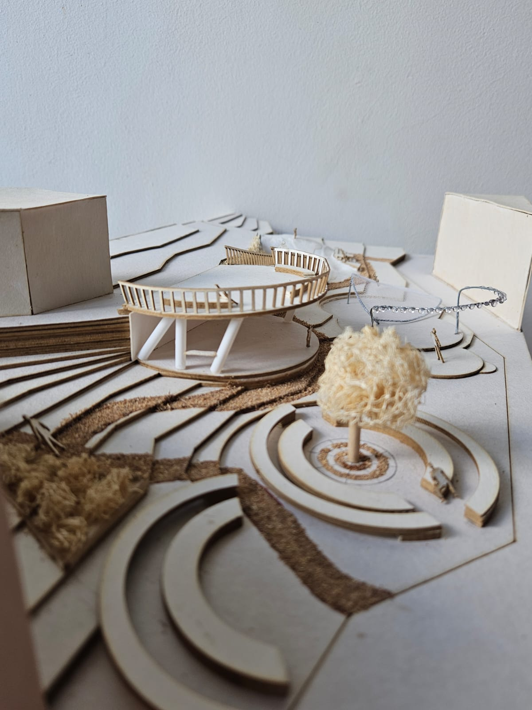

Parque Comunitario
Parque comunitario Moravia · 2024
Proyecto orientado a comprender necesidades, dinámicas y expectativas de los habitantes del barrio Moravia para diseñar un parque que respondiera a su contexto social y ambiental, integrando espacios de encuentro, recreación y drenaje sostenible.